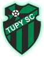

Fale Conosco
Faça Parte
Home
O Clube
Projetos
Atividades
Escolinhas
Multimídia
Parceiros
Atividades
TUPY
A nova administração do Tupy busca uma revigoração do Clube, com isso traz o planejamento ao publico interessado em participar também desse projeto.

Novo
TUPY
A nova administração do Tupy busca uma revigoração do Clube, com isso traz o planejamento ao publico interessado em participar também desse projeto.
Escolinha
TUPY
A nova administração do Tupy busca uma revigoração do Clube, com isso traz o planejamento ao publico interessado em participar também desse projeto.
TUPY
Agenda
TUPY
Notícias
Tweets de @FcTupy
TUPY
Patrocinadores
TUPY
Parceiros
copyright © Tupy Sport Club - Todos os direitos reservados
XHTML
CSS
Wesley Luan
 Wesley Luan
Wesley Luan
Wesley Luan
Wesley Luan
Wesley Luan
Wesley Luan